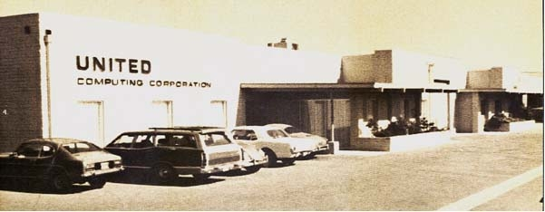
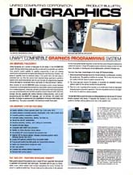
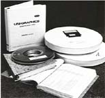
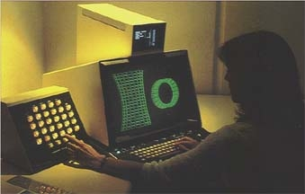
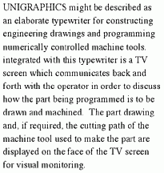
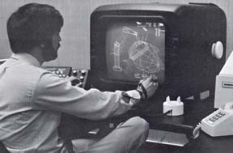
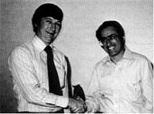
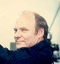

At some point, United moved to new offices at 22500 Avalon Boulevard, in Carson, CA. The building was previously a post office, so every once in a while someone would wander in hoping to mail a parcel or to buy some stamps. Here is a picture of the building.

July, 1973:
United agreed to purchase the ADAM code from MCS (Pat Hanratty's company). Hanratty had been working on ADAM since about October 1971. While it was similar to other systems he had developed previously at GM, GE, Douglas Aircraft and at early CAD companies like ICS and S-Cubed, it differed in that it was written in Fortran and consisted of about 600 subroutines.
United paid for exclusive rights to the software for both the US and the rest of the world, except for Japan. However, Hanratty was so good at selling software that he also sold exclusive ADAM licenses to both Computervision and Gerber. After that he decided to update the software, rename it AD-2000 and start the process all over again. This time he sold licenses to Autotrol, Graftek, and Control Data among others.
September, 1973:

The ADAM software was ported to a General Automation SPC-16 (an early 16 bit mini-computer) with a Tektronix display and an added menu-driven user interface. This was implemented as a single-user system and given the name UNI-GRAPHICS (sic). It provided basic 2D modeling & drafting functionality and supported 14 layers. One of the selling points was that it was a graphical "front-end" for the UNIAPT system. Note that at the time there were a total of six programmers assigned to the development of UNI-GRAPHICS. The first CAD/CAM marketing brochure produced by United is shown on the right (to see the complete brochure, please visit the "Archives").
October, 1973:
The first public demonstration of UNI-GRAPHICS was at the SME CAD/CAM II show at the Hilton Hotel in Detroit, MI (these SME shows were the fore-runner for what became known as AutoFact).
An interesting side note is that of all the major CAD systems exhibited at this show (Applicon, Autotrol, Calma, Computervision and Unigraphics) only Unigraphics is still being marketed today.
August, 1974:
The first multi-user system was implemented on the General Automation SPC-16/65, however possibly one of the most significant enhancements was made at this time. The "hyphen" was removed from the name and from then on it was known simply as "Unigraphics".
September, 1974:

United Computing finally sold their first Unigraphics system. The problem is that there is still some question as to who that first customer actually was. You see, Los Alamos National Laboratories in New Mexico placed the first order for a Unigraphics system, but due to the fact that they required support for a special Vector General display and a large XYNETICS flatbed plotter, the shipment of their system was delayed until January, 1975. So in reality, the first installation was at ALCOA in Lafayette, IN with the second production system going into production with the Corpus Christi Army Depot in Texas.
In those days the software and documentation didn't come on CD's, but rather the way you see it at the right.
February, 1975:
The Unigraphics hardware was upgraded to the General Automation 1830 system (the last model from this vendor offered for sale with Unigraphics).
Also at about this time the final look of the Unigraphics design station was settled on. As shown below, the Unigraphics design station was made up of a Tektronix 4014 storage-tube display, a 32 button PFK (Programmed Function Keyboard) and a medium message monitor mounted on the top of the main display screen. This configuration carried the designation "Model 319" design station. For cursor control the operator used thumb-wheels to position the full screen cursor and selection was done by pushing the spacebar (there were optional devices available from Tektronix such as joy-sticks or data-tablets for cursor control and a foot-switch for confirming your selection). For a complete review of hardware side of Unigraphics, please visit the "Hall of Hardware").
![Medium_PFK[1].jpg](./images/wbkpzvkd.jpg "Medium_PFK[1].jpg")
September, 1975:

The first integrated manufacturing module, Graphics Machining, is introduced. Note that the original ADAM product had machining capabilities, but hardly any of them worked, even though the "M" stood for "Manufacturing" (ADAM was an acronym for "Automated Design and Manufacturing").
This technology was so new that very simple descriptions of the product had to be written so that people would understand what the software was intended to do. An example of this is the excerpt on the right that was taken from an early United Computing Co. Annual Report.
April, 1976:
United Computing is acquired by McDonnell Douglas. The company remained in Carson, CA but was operated as a wholly owned subsidiary of McAuto, the Automation division of MDC.
Note that McAuto was already in the CAD/CAM business but their primary product was CADD, which was developed internally at MDC and was only available on large IBM mainframes. The hardware included very expensive Evans & Sutherland Picture System terminals (pictured on the right) and the software was optimized for the design of aircraft structural components. Even though CADD was possibly the most sophisticated CAD/CAM system available at the time, it had a few major problems that prevented it from being widely used. Besides the obvious reliance on very expensive hardware, McAuto was prevented from selling CADD to anyone who might be considered a competitor of any of the various aerospace divisions of the parent corporation. The few commercial CADD customers included companies like Timex and Cessna Aircraft (they built aircraft, but not in competition with MDC). The biggest non-MDC user of CADD was the Northrop Corp., but even they were restricted from using the software for anything other then the F18 program, a joint development with McDonnell Aircraft.
May, 1976:
The GRIP programming language was introduced. It was originally intended to address a request for support of parametric modeling. While it would be years before there were tools that adequately addressed this need, GRIP turned out to be one of the most popular and widely used modules ever offered with Unigraphics. For many years GRIP was considered by many customers to be the most significant differentiator between Unigraphics and the other CAD systems available.
June, 1976:
First delivery of Unigraphics on the Data General Eclipse system (note that United had been offering UNIAPT on the mediumer Data General Nova systems for some time). The Data General operating system was known as RDOS, however, by this time United had developed their own operating system called TSS (Time Slicing System) which permitted multiple users to run independent sessions of Unigraphics even though RDOS only allowed a single process to be running at any one time.
December, 1976:
The first annual Unigraphics Users Group Meeting was held. A group of users from 9 companies met at the United Computing development center in Carson, CA. Some of the companies represented were ALCOA, Caterpillar, Harris Corp., LANL, etc.
March, 1977:
First delivery of Unigraphics on a DEC PDP-11/70 system (as with Data General, United had been offering UNIAPT on mediumer DEC systems, in this case, PDP-8 systems). Note that this was the first time that Unigraphics ran under a true "native" operating system. While the DEC system offered many advantages to customers, the Data General configurations proved to be more popular from both a cost and an ease of operation point of view.
Also during March, 1977, United sold the first Unigraphics system that was installed outside of North America. Baker Perkins Ltd, of Peterbrough, England purchased a 4 seat system. The software ran on a Data General S200 with 128 kilobytes of main memory (you read that correctly, less then 0.13 MB), a 96 MB removable disk drive, a 9-track tape backup system, a paper tape punch/reader and a Calcomp 960 plotter. This turnkey configuration, including the Unigraphics software, cost over $400,000 (remember this was in 1977 dollars) and required setting up special facilities that included an air conditioned room for the CPU and disk drive and special controlled lighting for the terminal room (in those days, Unigraphics users did their best work in the dark). Also with this delivery of Unigraphics one of the enhancements demanded by Baker Perkins was support for 31 layers.
July, 1977:
The first time an existing customer took delivery of a second Unigraphics system occurred when Baker Perkins Ltd, installed a system at their US operation in Saginaw, MI. This was basically a duplicate of the system installed in the UK except that since this one was also replacing a 2 year old UNIAPT system, a non-graphical Dasher station was included to support NC Programming.
August, 1977:
The second annual Unigraphics Users Group Meeting was held in Long Beach, CA. Most of the sessions were held at Douglas Aircraft since the group (there were about 25 people in attendance) had out-grown the only conference room in Carson.
The single biggest controversy was a general complaint about the change from 14 to 31 layers. You see when there were only 14 layers and you did a layer list the information was displayed on the message monitor, but with 31 the list was now displayed on the main graphics screen. The problem was that it wiped out the display and users had to do a "Repaint" in order to see their models again (of course this did provide the advantage of allowing a user to get a screen "hard copy" of the layer list info). The discussion got so heated that the United management finally agreed to add an option to use the message monitor or the graphical screen for listing layer info (life was so much simpler in those days).
The big social event of the week was an evening at the Mayfair Music Hall in Santa Monica, CA.
April, 1978:

United Computing releases Version R1 of Unigraphics. This was virtually a complete rewrite of the original Hanratty code and become known as "Restructured" Unigraphics (that's what the "R" stood for). Two of United's development managers, Tom Rafferty and Manny Steinberg are shown at the right. Note that up until this time, Unigraphics releases did not have version numbers. In fact, the only way to identify which release someone had was to check the date on the distribution tape.
Some of the enhancements included in R1 were:
- 256 Layers
- Chain Selection
- Generic Point Subfunction
- Spline Under Tension
- Special Functions Available at Any Time
- Linear Data Base (which improved the performance of things like selection and deletion of entities)
Note that Version R1 was also the first release of what is now referred to as UGI. In fact, to be absolutely correct, the Unigraphics releases prior to R1 should really be called UGO ("Zero" in keeping with the way programmers insist on defining a string of integers).
July, 1978:
Version R2 of Unigraphics was released. The most significant change was the introduction of restructured GRIP. Some of the GRIP enhancements included with R2 were:
- File Manipulation
- Source (Text) File Access
- String Manipulation
- The Message Function
- Pattern Retrieval
- Vector Valued Functions
October, 1978:
Version R3 of Unigraphics was released with enhancements in the way dimensions and drafting entities could be edited as well as adding the Layer Move/Copy functions.
Note that back in those days, due to the medium number of customers and the fact that Unigraphics was still basically a 2D design and drafting system with only minor CAM functionality, it was rather easy to release a completely new version every 3 months.
February, 1979:
The 3rd annual Unigraphics Users Group Meeting was held at the South Coast Plaza Hotel in Costa Mesa, CA (note that there was no meeting in 1978). There were over 100 customer attendees as well as many United Computing and McAuto personnel (it should be noted that this was the first time the meeting was held at this time of the year and the opportunity for many of the East Coast and Midwest customers to fly off to Southern California in the middle of winter made it very attractive).
March, 1979:
The last of the Unigraphics restructured series, R4 was released. There were very few enhancements since most of the effort was directed toward fixing bugs. This was critical as most customers had not actually put any of the "R's" into full production and were still running the pre-restructured versions of Unigraphics. While there was a consensus that the new functionality was very useful, the quality of the releases had been considered rather poor and most customers were waiting until they saw significant improvements before they were ready to use it in production. However, it must be noted that R4 turned out to be very stable and thus was soon implemented by virtually all of the customers.
Remember in those days there were no such things as "patches" or even QRM's or IRM's. That meant that the only way to fix even the mediumest bugs was to ship a complete new version of Unigraphics. Therefore, the fact that many customers continued to use R4 well into 1980 was some indication of its quality and stability.
After the problems with getting a stable version of Unigraphics released, McDonnell Douglas finally decided to close down United Computing and make formal financial arrangements with John Wright and the other founders, however the terms required them to leave the company. The remainder of the organization became part of the newly formed CAD/CAM division of McAuto.
April, 1979:
George Meister (as seen at the right), one of the early CAD pioneers at Douglas Aircraft (in fact, while Pat Hanratty was still at DAC, they worked together on the GRID product, used to design wiring harnesses for commercial jets), was put in charge of the Unigraphics group, which was now part of the larger McAuto CAD/CAM Division. Despite that fact that McAuto was headquartered in St. Louis, George decided to continue to run the Unigraphics portion of the company from Southern California, and at least temporarily from, the existing Carson facility of the now defunct United Computing Co.
December, 1979:
The first release of Unigraphics under the new McAuto management was known as D1 ("D" for Double-Precision). In addition to being the first double-precision version of Unigraphics, the following enhancements were delivered with version D1:
- Graphics Lathe Module (GLM)
- Graphics Schematics Module (GSM)
- Offset Curves
- Trimming of General Curves (i.e., Splines)
- Architectural Dimensioning (i.e., Feet & Inches)
Return to Lobby